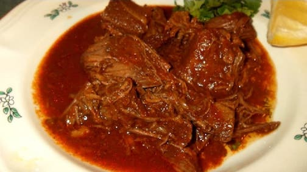

Comida para Fiestas en Norwalk
Va a tener fiesta o evento? Ofrecemos service the comida para fiestas y eventos en Norwalk, CA. Tenemos gran variedad de comida mexicana para sus fiestas. Llámenos hoy para un estimado gratis por teléfono. Deleite a sus invitados con una deliciosa comida mexicana y un excelente servicio. Reserve su fecha hoy. Cubrimos el area de Norwalk y otras ciudades cercanas.

Banquete de Comida para Fiestas en Norwalk, CA
Food Banquet for Parties in Norwalk
Comida para Fiestas y Eventos